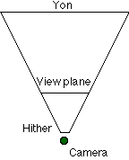
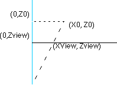

Legacy Document
Important: This document is part of the Legacy section of the ADC Reference Library. This information should not be used for new development.
Current information on this Reference Library topic can be found here:
ADC Home > Reference Library > Technical Notes > Legacy Documents > Graphics & Imaging >
Important: This document is part of the Legacy section of the ADC Reference Library. This information should not be used for new development.
Current information on this Reference Library topic can be found here:
|
3D Application DesignDesigning a high-performance 3D application requires a lot of work. Large world-spaces and high polygon counts are becoming the rule, rather than the exception. A successful application needs to deal with a number of different types of operations, including:
Hardware acceleration changes the rules when building a 3D application. Rasterization is usually handled exclusively in hardware, and can be done asynchronously with other operations. Hardware z-buffering can be used to perform hidden surface removal faster than software-based solutions. Developers should focus on visibility determination and level of detail when building applications designed to take advantage of 3D acceleration. What follows are a few suggestions for areas of study when building a hardware-based application. 3D accelerators are very efficient pixel pipelines, but there is a certain amount of overhead which can be measured per polygon, scanline, and individual pixels. Often, the selected filtering mode affects the drawing overhead; for example, trilinear filtering requires eight times as many texels to be fetched as point sampling. In addition to the overhead of transferring the polygon data over the PCI bus, early accelerators performed much of the triangle setup in software, increasing the per-polygon setup time by hundreds of cycles. The net result is that the total time to render a small polygon might end up being larger than it would have taken to render it in a software-only solution. At least one developer reported that a large percentage of the polygons rendered by their application were four pixels or smaller in size. In this case, creating a model with a lower level of detail reduces the total number of polygons sent to the hardware, paying a small price in image quality. Visibility DeterminationWhen you start creating larger worlds, a significant portion of the polygons will probably never be visible from the camera position. Some fall completely outside the viewing frustum. Others are completely occluded by other polygons. Applications should organize their data to allow polygons to be culled efficiently, rather than simply blasting them to the hardware and expecting it to draw fast enough. Worse, each polygon you draw might result in a texture being loaded. Texture thrashing causes noticeable drops in performance and will be discussed in detail later in this note. Here are a couple of algorithms that developers have used in the past: details are left as an exercise for the reader, although they are both discussed in detail in the bibliography. Quake uses a BSP tree to organize the world information. One advantage of a BSP tree is that an entire subtree can be culled in a single test against the viewing frustrum, allowing large numbers of polygons to be culled efficiently. In addition, Quake pre-calculates a loose set of visible polygons at each leaf of the tree. When it renders a frame, Quake only considers the polygons in the current leaf's PVS, drastically reducing the number of polygons it needs to examine. Portals are another method used to cull polygons efficiently. If you were in a closed, opaque room with a single open doorway, only polygons on the other side of the doorway would be visible. The doorway becomes the "portal" to the next room. To render using portals, you draw all the polygons in the current room, then determine which portals are visible in the current viewing frustum, and recursively draw the rooms attached to them through the smaller viewing area formed by the portal. Clipping
Some hardware performs clipping automatically on every pixel that is rendered. This is known as a scissor clip in Z-BufferingHardware z-buffering is very useful for hidden surface removal, but typically takes up as much memory as the actual buffer you are rendering into. A two- megabyte 2D/3D card, with a 640x480 front, back and z-buffer, has less than a quarter of a megabyte of VRAM for textures. Applications that intend to run on a 2-megabyte card might need to consider software HSR algorithms in order to leave enough VRAM for textures. Some pieces of hardware perform certain z-buffering operations more efficiently than others. If some polygons in the scene are already presorted (e.g., a BSP tree), the order you send the polygons to the hardware can affect performance. For example, if the hardware performs z writes faster than z tests, turn z testing off and render the sorted polygons back to front. Similarly, if z tests are more efficient than z writes, leave the testing on and render from front to back. Note that RAVE does not provide any sort of API to look for these features, so testing your application on multiple pieces of hardware may help you discover these attributes. What Does RAVE expect?RAVE is a very thin layer over the hardware. When you call a RAVE routine, in most circumstances you are calling directly into the RAVE driver, with no overhead imposed by RAVE itself.
By default, when you start a frame (by calling
It is useful to understand what values RAVE engines will expect to see, so we'll examine the typical values stored in the textured vertex structure ( The x and y values are floating point values in screen coordinates. For a 640x480 context, the values range from 0 <= x < 640 and 0 <= y < 480. Note that the bottom and right limits are not inclusive. Debug versions of RAVE will catch any polygons that write outside this bounding box.
Z values range from 0 to 1. Most current 3D hardware supports 16-bit z-buffers, so you want to maximize the range available in the z-buffer. The hither plane should be placed at 0. Because the z-buffer starts out initialized to 1.0, if you place the yon plane exactly at 1.0, any pixels on or near the yon plane will not be drawn. Instead, you want to move the yon plane in just close enough to make all points inside the frustrum visible. The engine provides two tag variables that will let you calculate this value (
The value of
The texture coordinates u and v should be multiplied by Optionally, the application should fill in the color values -- they are only needed if the application is using a special texturing mode. The Apple 3D accelerator always performs some of these modes (even if you try to disable them), so always fill in the modulation and highlight values when rendering to Apple hardware. Texture modulation is useful for lighting effects, while decal effects can be used to simulate fogging by blending the texture with a lighting value, choosing an alpha value based on the z coordinate. Hardware-based fogging is becoming more common and that will be directly supported in a future version of RAVE. For developers who already have a 3D application, the previous information might be enough to convert it to call RAVE. Developers at many of the early game kitchens found that adding RAVE support could be done in as little as an hour for gouraud-shaded triangles. Textured triangles, because of the need for texture management, takes longer. One method to speed up development of a RAVE conversion is to add a second monitor with a 3D accelerated video card. All of the software rendering code can initially be left intact, with mirrored calls to the RAVE monitor. This has the added benefit of allowing you to compare the software and hardware-rendered versions of the application. Eventually, the code needs to switch between calls to the software rasterizer and RAVE. RAVE is a fairly thin API, so one easy option is to build the software rasterers as a RAVE engine and register it when the application launches. Your own engine then replaces the Apple software engine when no hardware is available. The Apple software engine produces high-quality results, but is not optimized for game performance. Building a 3D ApplicationIf you've never written a 3D Application before, this section introduces some of the concepts and a lot of the math associated with building one. Many books have been written on the subject -- some of those books are listed in the original RAVE documentation, while others are listed in the bibliography at the end of this note. Everything to be rendered is based on a camera (which has a position and orientation in our 3D world), and a viewing plane, which represents the location of the screen in the viewed area. A clipping frustum is built around this viewing plane, and all objects that we render are clipped to this frustum.  We're going to introduce a coordinate system and some definitions, and follow with the rendering pipeline that a typical application will follow. This doesn't cover more sophisticated forms of hidden surface removal and object culling, as those are subjects for entire books! Our application will use a left-handed coordinate system, with x going from left to right, y moving from bottom to top, and z going into the screen. Local CoordinatesLocal coordinates are the untransformed coordinates of a model. The model is centered around the origin, facing into the z-axis. Each object has its own position and orientation which are used to transform the local coordinates into world coordinates. World CoordinatesWorld coordinates are the standard coordinate system into which all objects are placed. In order to be rendered to the screen, we need to pick a point of observation, an orientation for the camera, and a distance that the viewing plane will be drawn. We always assume that the viewing rectangle is perpendicular to the orientation vector, which simplifies the application design. Camera CoordinatesGiven the camera's position and orientation, we can calculate a transformation matrix that moves the point of observation to the origin and then rotates the coordinate system so that the camera is pointed down the z-axis, with the y-axis as the "up" direction for the camera. This gives us a coordinate system that easily allows us to do z-perspective correction. Later, we'll also modify the camera transform to optimize clipping; this also affects the screen transforms, but does not affect the final result. Screen CoordinatesThese are the actual coordinates passed to the RAVE engine -- x and y are in pixels, while z ranges from 0 to 1. The 3D Rendering PipelineEach object to be rendered will be passed through our rendering pipeline. The complete pipeline is presented here, and individual pieces will be touched on later as the math is introduced. A few sections (lighting, backfacing) are not covered here, but can be found in some of the books in the bibliography. We assume that all polygons are convex, since a non-convex polygon can be tessellated into multiple -convex polygons.
Projecting a PointWe're going to skip all of the matrix math, as it is covered in most 3D books, and go right to projecting a point from camera space to screen space. In camera space, our camera is placed at the origin and is looking down the z-axis, where we have placed a viewing plane perpendicular to the z-axis at some distance, zview. Given any point (x0, y0,z0), we want to project that point onto the viewing plane by calculating the intersection of the viewing plane with a ray projected from the origin through our point.  The calculation is the same for either the x or y coordinate, so we'll only do the math for the x coordinate. We have two similar triangles, one from (0,0,0) to (0,0,Z0) to (X0,0,Z0), the other from (0,0,0) to (0,0,Zview) to (Xview,0,Zview). One property of similar triangles is that the proportions of any two sides must be identical: Xview/Zview = X0/Z0 Solving for Xview, the projection calculations become:
Xview = X0 * zview / z0 Choosing the Viewing DistanceWe need to choose the correct distance to place the viewing plane. We want to center the context's viewing rectangle around the z-axis. We should choose a depth that gives a field of view for human vision. Given a triangle from (0,0,0) to (0,0,Zview) to (XView, 0,ZView), we can calculate the angle for half of the viewing area, and then double it. In this case, XView is half the width of the context (in pixels).
tan (angle) = Xview/Zview; So the complete viewing angle is twice that, or 2tan-1 (Xview/Zview). Similarly, the vertical field of view is 2tan-1 (Yview/Zview). Alternatively, we can take a particular field of view and use it to determine the distance our plane needs to be from the origin. A good viewing angle seems to be about 110 degrees horizontal.
Zview = Xview/tan(horizontal angle/2) If your application needs to run at multiple context sizes, it doesn't make any sense to tie all of the model data to a single context size. In this case, you might want to build the models for a smaller world, and scale the final results to the appropriate screen resolution. A 32x24 viewing window can be scaled nicely to 512x384, 640x480, 800x600, 832x624 or 1024x768 by multiplying the final x and y values by a scaler. All clipping and model calculations can be done at the smaller values. Clipping to the FrustumWe must quickly be able to cull pieces of polygons that fall outside the viewing frustum. The four clipping planes that make up the side of the frustum are calculated based on the size of the view rectangle and the distance of the viewing plane. Because our projection formula divides by z, we also need to ensure that points with z<= 0 are not projected. We do this by specifying a hither plane (z=hither). Similarly, we specify a yon-clipping plane (z=yon), to cull objects very distant from the camera. Before we define the six clipping planes, we should actually talk about how to clip points, lines, and convex polygons against a 3D plane. An arbitrary plane is traditionally defined by the equation: Ax + By + Cz - D = 0. (A,B,C) turns out to be the plane's normal. If (A,B,C) is a unit vector, then D measures the distance from the origin to the plane. Clipping a Point to an Arbitrary Plane in 3DWe have a plane normal, and a point on the Plane, P0.
Normal, N = Ai + Bj + Ck We pick a second, arbitrary point P, on the plane, and draw a line L from P0 to P.
P = (X,Y,Z) We know that N is perpendicular to any line in the plane, so the dot product of the two vectors is 0.
L * N = 0 P * N = P0 * N The dot product of any point in the plane with the normal gives the same value, which is actually the distance D. Given a point, we can calculate the dot product of that point with the plane's normal (giving us the distance along that normal). If that distance is greater than D, then the point lies inside the plane, and is not clipped. Less than this value, and it lies outside the plane and is clipped. Clipping a point costs one dot product and one comparison. Clipping a Line to the 3D PlaneClipping a line is almost as easy. Calculate the distances for both points of the line. If both lie inside the plane, the entire line is inside the plane and is not clipped. If both lie outside the plane, the line is clipped completely. If they lie on either side of the plane, we need to calculate the intersection point of the line and our clipping plane, and clip the portion that lies outside the plane. We know that the point on the clipping plane will have a dot product equal to D. Given a line from P1 (X1,Y1,Z1) to P2 (X2,Y2,Z2), we can write the parametric equation of the line, where a point P varies from P1 to P2 as we increase t from 0 to 1. P = P1 + t(P2-P1) We can then calculate the value of t that results in P * N = D.
P * N = D
D1 = P1 * N D1 + t(D2-D1) = D
(D-D1) D1 and D2 are the two dot products we already determined to clip the line, and D was precalculated for the plane. We can plug this value of T back into the parametric equation to determine the value of P. Clipping a Convex Polygon against the PlaneClipping a convex polygon against the plane means walking the list of lines and clipping each against the plane. This will always result in another convex polygon, although it may gain or lose vertices in the process. (The only exception occurs when the polygon is culled completely.) A simple algorithm to do this is walk the list of vertices in the polygon. For each pair of points, if the first point lies inside the plane, add it to the output. If the points are on opposite sides of the plane, add the intersection point to the output. The Clipping FrustumNow that we understand how to clip the polygons against a plane, we can calculate the equations for each plane in the clipping frustum. As before, our view point is the origin, and our viewing rectangle lies at some distance, Zview.
Xview = view width/2
Now we can calculate the six clipping planes. The hither and yon planes are the easiest, since they are both perpendicular to the z axis. The hither and yon plane are the easiest to determine.
Hither plane: normal = (0,0,1), distance = hither The other four planes all pass through the origin, so their distances will always be 0. The horizontal clipping planes can be determined by choosing the normal that is perpendicular to the lines from the origin to (X0,0,Z0) and (-X0,0,Z0)
X plane: normal = (-Z0,0,X0), distance = 0 The Y coordinates can be determined similarly.
Y plane: normal = (0,-Z0,Y0), distance = 0 For the distances to actually make sense, these normals should all be normalized to a length of 1.0. Choosing Hither and Yon ValuesThe hither value should be chosen such that it is shorter than the closest distance any object can appear to the camera. Essentially, terrain and objects should be collision-detected so that they cannot appear closer than this distance. If this does not happen, then it is possible to find yourself inside an object, or to see through a piece of terrain by mistake. This is a fairly common bug in 3D games. The yon plane generates an unusual effect: a piece of terrain visible near the edges of the screen can disappear when it is moved toward the center (and crosses the z plane). The object disappears when you turn to face it. Using a larger yon value, and adding other effects (fog!) can make objects appear more smoothly and avoid the flash-in when objects cross the yon plane. Clipping OptimizationSince we have to clip every polygon, we need to make clipping as fast as possible. Ideally, we wish to minimize the calculations we perform on an object, and cull it at the earliest point possible. This section is specifically devoted to clipping objects. Other pieces, such as terrain, could probably be clipped more efficiently using BSP trees and other algorithms. Optimizing Out the Hither PlaneIf you can accept slightly closer clipping near the edges of the screen, you can eliminate the hither plane and move the focal point of the four x and y clipping planes from the origin to (0,0,hither). Checking the Bounding Sphere Against the FrustumGiven an arbitrary object (consisting of a number of polygons), we can determine a bounding sphere for the entire object, and cull the object as a whole. The radius of the sphere can be calculated by taking distance from the origin to the most distant vertex. If we take the dot product of the object's position with our plane, we know where the center of our sphere lies. We'll call this Dcenter. If (Dcenter + radius < Dplane), then the entire sphere lies outside this polygon, and we can cull the entire object without any additional calculations. If (Dcenter - radius > Dplane), then the entire sphere lies inside this clipping plane. We know that no polygons in the object will intersect it, and we can set a flag for this object to avoid more expensive polygon clipping later in the pipeline. The best way to do this is probably to transform the frustum back into world coordinates, so you can work directly with the object's position without calculating a transformation matrix. The reverse-transform only needs to be calculated when the camera moves. The maximum cost for this calculation is 6 dot products, which reduces the number of objects the pipeline will deal with, and significantly reduces the amount of polygon clipping we'll need to perform. If most objects tend to intersect the frustum, this technique will reduce performance. Normalized Clipping FrustumEvery time we clip a polygon, we calculate one dot product per vertex for each plane we clip it to. For example, even if no clipping actually happens, clipping five vertices against six plans results in 30 dot products, with 90 multiplies and 60 adds. Clearly, even on a fast machine, it would be advantageous to reduce this number. If the horizontal and vertical clipping planes lie at 45-degree angles, the calculation for a dot product is reduced to a single add with no multiplies. The plane equations look something like this:
X plane: normal = (-1,0,1), distance = 0 (The normals would be normalized to unit vectors). If we dot a point P with the first normal, the distance is -Xp + Zp. The comparison can actually be done without actually performing the add; if (Xp > Zp), the point will be clipped. If we find that a line needs to be clipped, it can be calculated with a few adds and one divide. We can take our existing camera matrix and apply an additional scaling matrix that places the x and y planes at 45-degree angles. At the same time, we can apply the z-coordinate transformation to place the z values between 0 and 1. (Sx,Sy,Sz) = (Z0/Zyon * X0, z0/Zyon*Y0, 1/Zyon). When the points are projected into screen space, we can apply a reverse transformation to scale the x and y coordinates to their correct values. (Sx,Sy,Sz) = (x0/z0, y0/z0, 1) This transformation can be applied as part of the equations used to project the results into the RAVE coordinates. Given (Xc, Yc, zc) in the scaled camera space, the final projection equations are:
InvW = 1/Zc; The current scaling value for z actually places the yon plane at z=1.0, so choosing a slightly larger value to divide by will move all z values into the usable z-buffer space. Texture ManagementRAVE has only minimal support for texture management. An application can pass in a flag ( In any case, the engine can choose to keep any texture in normal memory and only copy it to VRAM when that texture is actually utilized for drawing, Then the engine could choose instead to disallow any textures to be created if they won't fit into VRAM immediately. Applications must work to ensure that the textures they need will be loaded into the RAVE engine. This is actually the largest set of code to be written when converting an existing 3D application to call RAVE. We'll start by discussing an ideal situation for texture management, and then quickly shoot holes in it. We'll follow up with suggestions that both applications and engines can follow to improve their texture management. The "Ideal" RAVE Engine's Texture Management
The application creates a large set of textures ( New textures are generated for every frame of animation. Animated textures or textures that combine texture data with lightmaps are possible, so texture creation in the engine works efficiently. The ideal engine renders this scene correctly, without crashing or accidentally using a disposed texture by mistake. The engine deals with texture creation and deletion efficiently, avoiding all unnecessary stalls. A Dose of RealityWhile a RAVE engine can come close to the ideal described above, the engine usually will not have adequate information to schedule the loading and unloading of textures. Assume the engine will let you create a working set of textures larger than will fit in VRAM. If you cycle through these textures, either the engine needs to defer rendering a polygon, or it needs to copy that texture into VRAM. One way, the engine isn't doing any drawing because it is hoping that more polygons will be buffered to that same texture. The other way, the engine draws immediately but is also spending a large amount of time copying textures into VRAM.
Many engines do not allow more textures to be allocated if they won't immediately fit into VRAM. This gives immediate feedback to the application (
What this means is that applications must expect
The Apple 3D accelerator requires all textures to be in VRAM when Engine Texture Management StrategiesThis section discusses one possible way that an engine could implement texture management. It allows more textures than can safely fit into VRAM, and will safely allow textures to be deleted without causing rasterization artifacts.
Engines designers should definitely consider allowing more textures than will fit in VRAM, especially if they perform any significant calculations inside We assume that textures can be located in the application's memory, the engine's memory, and in VRAM. Engine memory is probably allocated in the system heap, but could also be allocated in the application's heap if necessary. Any copy of the texture in VRAM is just a copy; we can remove it at any time without losing the texture. Finally, we want avoid synchronizing the engine as much as possible when allocating or deallocating textures. The engine must also safely delete textures so that all previously submitted polygons are rendered correctly.
Now for the design. First, we reference-count all textures. A texture is allocated with a reference count of 1. Each time we submit a polygon, we increment the reference count; when it finishes rendering, we decrement it. Finally, when the application calls
We also keep a global count of the number of textures that have been queued up to be deleted. We increment this count in Whenever a drawing command hits the renderer, we check to see if that texture has been loaded into VRAM. If the texture is not in VRAM, we look for an empty space large enough to hold the texture. If there isn't a large enough space, when we find a texture of roughly the same size and remove it from VRAM. If Virtual Memory is turned on, we must lock down textures to allow them to be copied at interrupt time.
Some engines don't have separate concepts of VRAM and engine memory. These engines usually create the texture in VRAM and copy it when the texture is actually created ( Finally, if the application asks for the total amount of available texture memory, we synchronize until all textures are deleted, and return the appropriate amounts of memory. Here's pseudo-code that describes how this works.
Calls that start with "QA" are the regular application calls. VRAM_ENGINE refers to engines that copy all textures to VRAM on allocation, without a separate section of engine VRAM.
When deleting textures from VRAM, we usually would delete a texture of the same size that hasn't been used in a while (LRU caching). In an ideal world, we could queue the polygons out of order in order to minimize the number of times we load the texture into VRAM. The problem is in dealing with multiple polygons sharing the same z value. If they are queued out of order, a different pixel value would be written than if they were drawn exactly in order.
VRAM engines may block when a new texture is allocated. Other engines rarely need to block (inside Application Texture Management StrategiesWe'll assume in this discussion that you have more textures than will fit into VRAM, as that is the most common situation these days. On the other hand, if you fit all the textures for a particular game level into VRAM, and never need to change the texture set, you'll see awesome performance.
Many engines automatically mipmap your textures when you call
Downsampling a texture may allow it to fit into VRAM when the full-sized texture would not. Instead of calling Rather than creating a large number of textures at once, you should consider spreading the work out over multiple frames of animation. This will smooth out the drop in frame rate that usually comes with loading a large number of textures. For example, if you are moving into an area that will require a large number of textures, you can prefetch the textures over multiple frames, and have them all in memory when they are actually needed to draw. You might also load smaller versions of the textures immediately and slowly bring in the larger textures. Finally, if you don't have a suitable texture in memory, you can grab the color out of the smallest mipmap level and use it to gouraud-shade the triangle instead. One important performance optimization is to reduce the number of times you change the current texture. Many engines load the texture into VRAM or perform other processing then you set the current texture. Even if the software engine doesn't do this, many hardware accelerators use texel caches to improve performance, and changing the texture flushes those caches. If you render larger batches of polygons with a single texture, you'll see better performance. Conceptually, this can be accomplished by organizing the application's data appropriately. For example, you might apply a single texture as a skin over an entire model, and render all objects based on that texture at the same time. This reduces the number of texture loads to one per model. Preflighting Texture AllocationA more drastic solution would be to calculate and store all of the polygon information before calling It might also be possible to quickly scan the available scene information and determine a list of all the textures that would be needed. After loading those textures, you could then walk the lists again and actually submit them to the renderer.
Either way, this type of solution can result in the minimum number of calls to set the current texture, significantly reducing the thrashing that takes place when loading and unloading textures into VRAM. You walk the list of needed textures, and create any that aren't already loaded into the engine. Afterwards, you render all polygons for any loaded textures. If you want to load more textures, you call Alpha-blended textured polygons are generally rendered by the engine after all opaque triangles are rendered. You should avoid deleting any textures for alpha-blended polygons until after that frame has been rendered. Here's a few snippets of pseudo-code that describe the rendering loop:
The rendering loop would look something like this:
If engines perform their own synchronization, then all of the calls to QASync can be removed.Tuning RAVE PerformancePerformance tuning has been a big focus of this note, mostly because games are one of the most common applications to be written using RAVE. So this section will mention a few things that can help tune RAVE performance.
While RAVE does not presently support the multi-processor APIs, your application can do so. All calls to RAVE must be made from the main thread, but your geometry calculations could run inside an MP-task. Even on a single processor system, this allows your engine to receive time, even if the main task is blocked inside of ReferencesThe RAVE Documentation already lists a number of excellent sources on building 3D applications. Here are a few books that specifically cover 3D Game design.
Zen of Graphics Programming, Michael Abrash, ISBN: 1883577896 In addition, Game Developer Magazine has published many excellent articles covering 3D acceleration, engine design and texture management. Downloadables
|
|